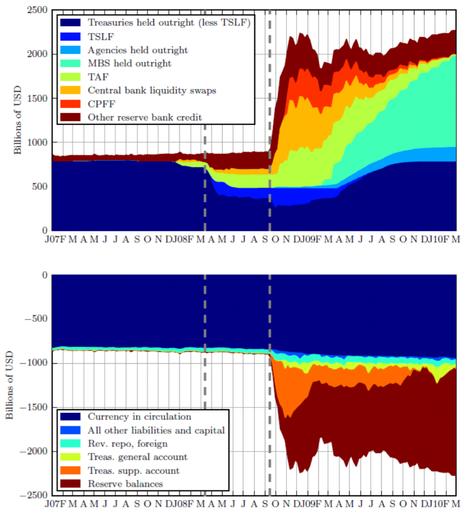
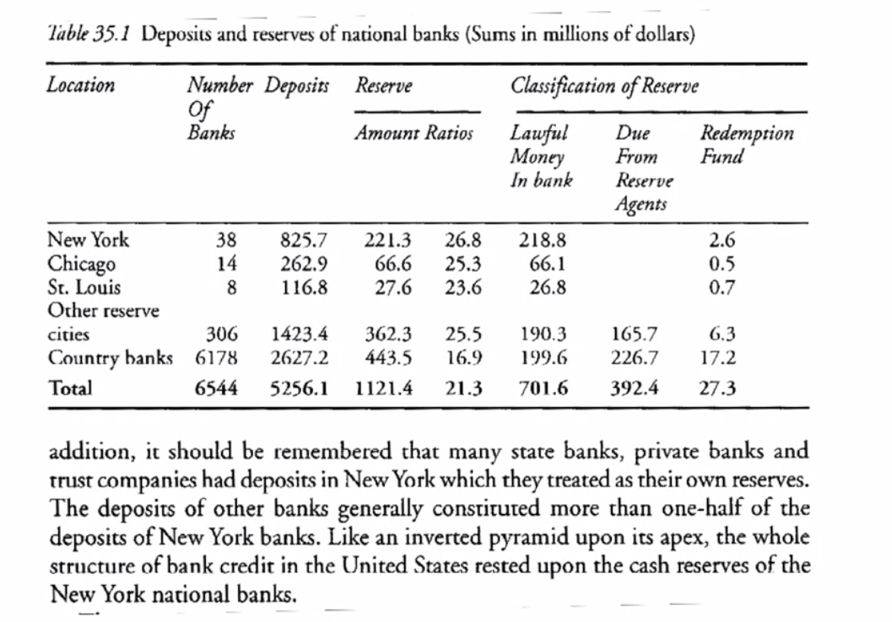

Economics of Money and Banking - Week 2
Money and the State: Domestic
FT: Quantitative Easing and the Fed
Two charts, top chart is Fed assets and bottom chart is Fed liabilities.

Timeline:
- Aug 2007, Fed lowered interest rates
- Mar 2008 (first vertical line)
- Bear Stearns collapsed.
- Fed started selling off treasuries bills.
- Sep 2008 (second vertical line)
- AIG and Lehman Brothers collapsed.
- Fed expanded liabilities and balance sheets (doubled in a week).
- $600B (orange section in assets chart) was lent to European banks and Japanese Central Bank.
- Nov 2008: QE2 -- Fed bought Mortgage Backed Security (cyan section in assets chart)
Allyn Young: Money and Economic Orthodoxy
- vs Economic orthodoxy
- Barter
- Growth
- Currency principle
- vs Chartalists
- vs Efficient markets
- vs Populists
National Banking System Before the Fed

- Deposits (liabilities)
- New York / Chicago / St. Louis: 25% minimum reserve
- Layering
- Other important cities can hold some of their reserves as deposits in New York
- Country banks (small banks) can hold their reserves as deposit in their local money bank
Civil War Finance, Bonds, and Loans
Bond Sale
Government
| Assets | Liabilities |
|---|---|
| + Deposits (G) [1] | + Bonds [1] |
| + Deposits (G) [2] | + Loan [2] |
| - Deposits (G) [3] | |
| + Gold [3] |
Private Sectors
| Assets | Liabilities |
|---|---|
| - Deposits (PS) [1] | |
| + Bonds [1] |
Banking System
| Assets | Liabilities |
|---|---|
| - Deposits (PS) [1] | |
| + Deposits (G) [1] | |
| + Loan [2] | + Deposits (G) [2] |
| - Gold [3] | - Deposits (G) [3] |
- Case [1]: Private sectors bought bonds from government.
- Case [2]: Banking system loaned directly to government.
- Case [3]: Government withdrew gold from bank reserve, to buy stuff from abroad.
Civil War Finance, Legal Tenders
Government
| Assets | Liabilities |
|---|---|
| + War goods | + Legal tenders ($400MM) |
Private Sectors
| Assets | Liabilities |
|---|---|
| - War goods | |
| + Legal tenders ($400MM) | |
| - Legal tenders ($100MM) | |
| + Deposits ($100MM) |
Banking System
| Assets | Liabilities |
|---|---|
| + Legal tenders ($100MM) | + Deposits ($100MM) |
本作品采用知识共享署名-非商业性使用 3.0 版本许可协议进行许可，欢迎转载，演绎，但是必须保留本文的署名 zellux（包含链接），且不得用于商业目的。